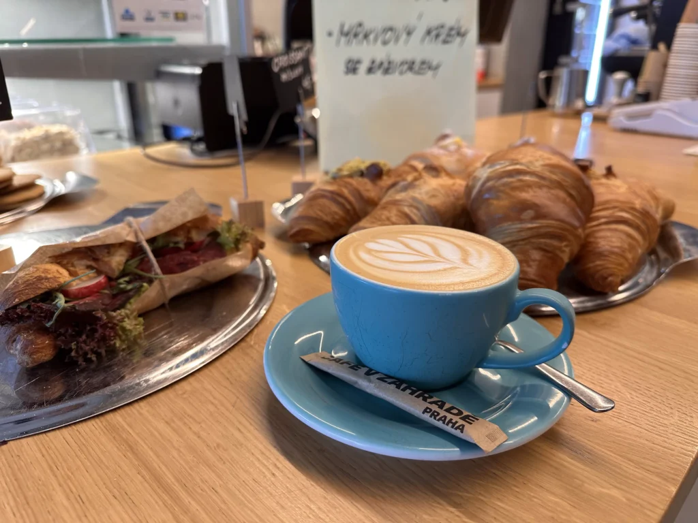
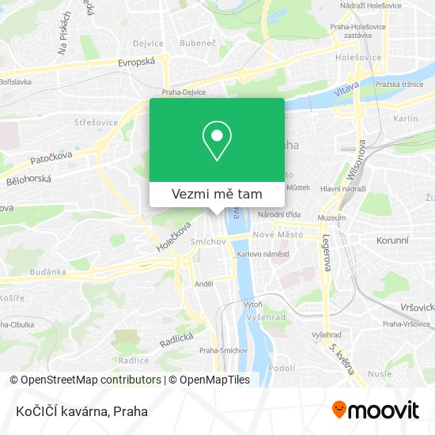

Vítejte v nejútulnější kavárně ve městě!
Otevřeno denně 8:00–20:00

O nás
Kavárna U Kočky není jen obyčejné místo, kde si dáte kávu – je to prostor s duší. Vznikli jsme z lásky ke kávě, kočkám a klidným chvilkám. Naše kavárna navazuje na dlouhou tradici kaváren, které po staletí sloužily jako místo setkávání, inspirace a odpočinku.
První kavárny vznikly v 16. století v Istanbulu, odkud se jejich koncept rozšířil do celé Evropy. V 18. a 19. století byly kavárny v Paříži a Vídni kulturním centrem – místem, kde vznikala poezie, filozofické debaty i revoluční myšlenky. Tento duch jsme chtěli přenést i do naší kavárny.
Kavárna U Kočky byla otevřena v roce 2020 jako projekt dvou přátel. Od té doby si našla stovky věrných zákazníků. Zakládáme si na přátelské atmosféře, kvalitní kávě a tom, že si u nás každý může odpočinout – ať už s laptopem, knihou nebo s našimi přítulnými kočkami.
Proč právě my?
- ☕ Výběrová káva z fair trade zrn
- 🍰 Domácí dorty a dezerty pečené s láskou
- 🐱 Přítomnost koček – každá s vlastním příběhem
- 📚 Relaxační prostředí s knihami a Wi-Fi
- 🌿 Nabídka pro vegany, vegetariány i celiaky
Naše kočky
V naší kavárně bydlí několik zachráněných koček. Jsou očkované, mazlivé a milují společnost lidí.
- Micka – naše nejstarší kočka, která miluje spát na křeslech.
- Pan Kožich – zrzavý elegán, který si rád sedne na váš notebook.
- Lentilka – hravé kotě, které miluje šlehačku (i když ji nesmí).
Kde nás najdete?
Najdete nás v centru města na adrese Kočičí ulice 9, Praha. V blízkosti je tramvajová zastávka i možnosti parkování. Těšíme se na vaši návštěvu!
